What are cities and how are they organised?
Why do people live in cities, and why are cities growing so fast?
Watch and think
Urbanisation:
an increase in the proportion of people living in urban areas (towns and cities).
As you watch:
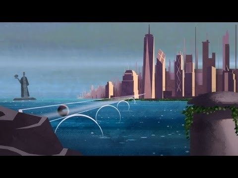
No internet connection.
Scan the code or open
youtube.com/watch?v=fKnAJCSGSdk
Pause at the halfway mark and ask pairs to compare their notes for the first question before watching on.
Scan to answer on your phone
Answers that come up more than once grow bigger. As the owner you can click any word to hide it, or clear the board between classes. Share the board as Contributor so people can add answers.
1950 → 2021
The urban and rural population of the world, 1950–2030. Hover over the chart to read the values.
| 1950 | 2021 |
|---|---|
| World population: 2.5 bln | World population: 7.9 bln |
| Seven cities with more than 5 mln population | 34 megacities > population over 10 mln |
| Largest city: New York (12 mln) | Largest city: Tokyo (37.3 mln) |
Quick think: Why did the world experience an “urban explosion” in the past 80 years?
Look for
Industrialisation and factory jobs; rural push factors; better medicine (falling death rates, natural increase in cities); improved transport; economic growth in Asia and Africa since 1980.
Describe the pattern · PQE
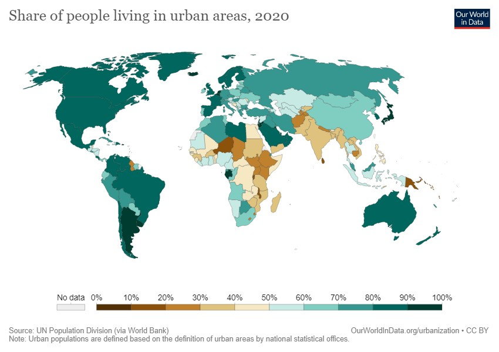
Suggested answers
P: highest in the Americas, Europe, the Middle East and Australia; lowest in sub-Saharan Africa and South Asia. Q: Australia 86% vs India 35% and Niger 17% (2020). E: Gabon and Botswana are highly urban for Africa.
Earth at night
Each light is a town or city. Spin the globe, then click the numbered pins to fly to each place, then decide what the bright (and dark) areas have in common.
The thin bright line is the Nile. Almost all Egyptians live beside the river and its delta, where there is water and fertile soil.
Flat, fertile, well-watered farmland has supported dense populations for thousands of years. Cities grew at river crossings and ports.
From Boston to Washington, cities grew around natural harbours that linked North America to trade across the Atlantic.
Coal, navigable rivers and railways created a dense network of industrial towns and cities.
Dense rainforest and few roads: the cities that exist sit on the big rivers and the coast.
Australia's lights hug the coast. The dry interior is almost empty, because climate and water decide where people can live.
Discuss: list the physical factors (water, flat land, climate, coasts) and the human factors (trade, transport, resources) that explain the pattern.
Land-use zones and the Multiple Nuclei Model
Patterns in the city
For many people, cities can appear to be confusing and disorganised places – not for geographers, though. Geographers identify patterns in the way areas and features of cities are organised. These patterns bring a sense of order to these complex places. Like a jigsaw puzzle, cities are made up of different pieces that, together, make up a distinctive landscape, including residential zones, commercial zones, industrial zones and green zones.
Although every city is unique, they all share certain characteristics. For example, tall buildings tend to be located near the centre of every city, because land there is expensive. Land is usually cheaper near the edges of every city, so that is where people tend to live.
By mapping the main land uses in a range of cities it is possible to identify similar patterns. Some geographers have tried to explain these patterns by developing models that illustrate these patterns. These are called urban models. In this activity, you will explore the Multiple Nuclei Model.
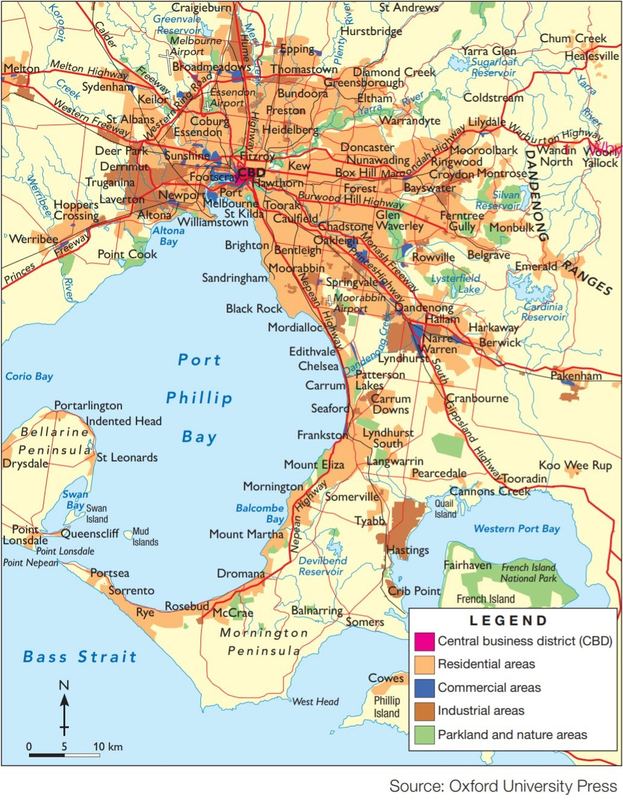
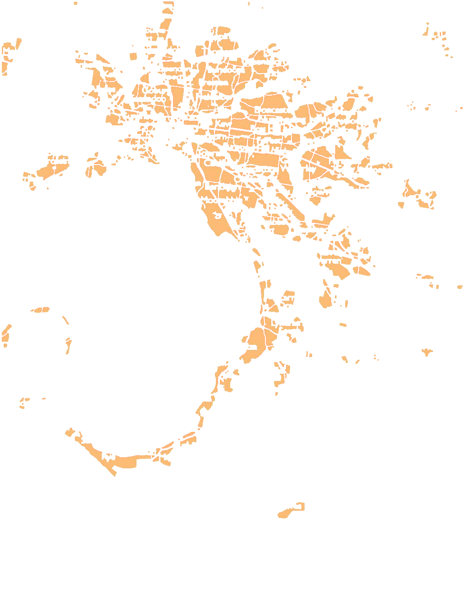
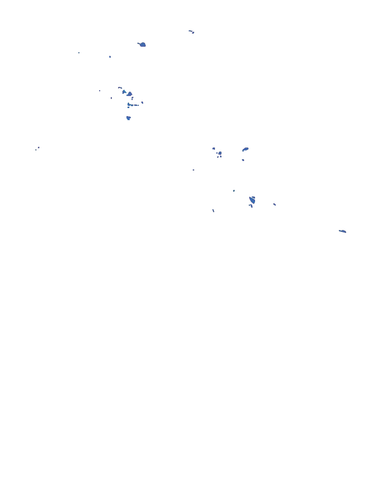
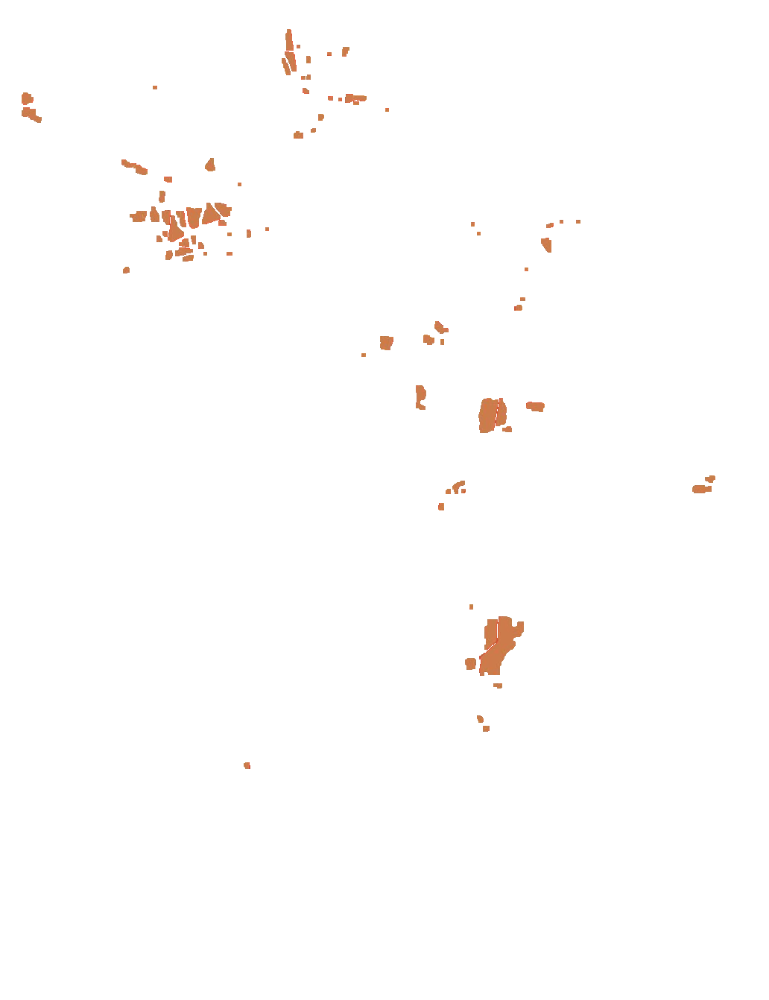
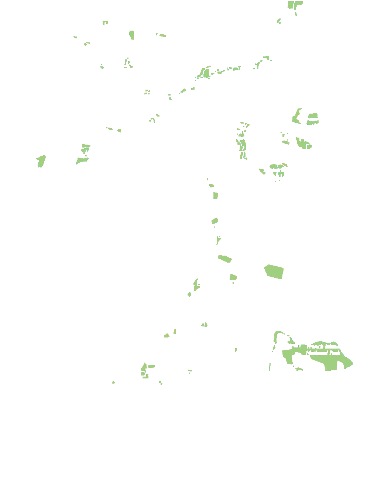
Light up a zone
Click a zone. The % is its share of the coloured land on this map.
Click a photo to flip it
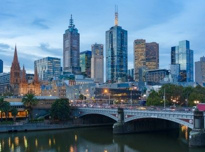
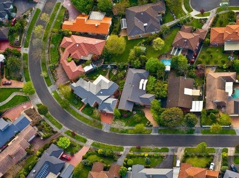
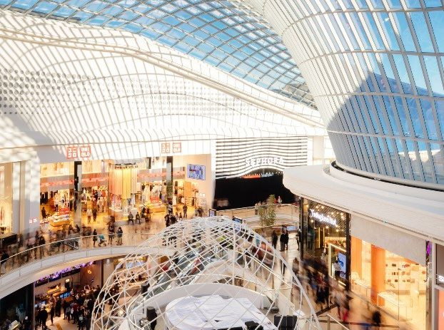
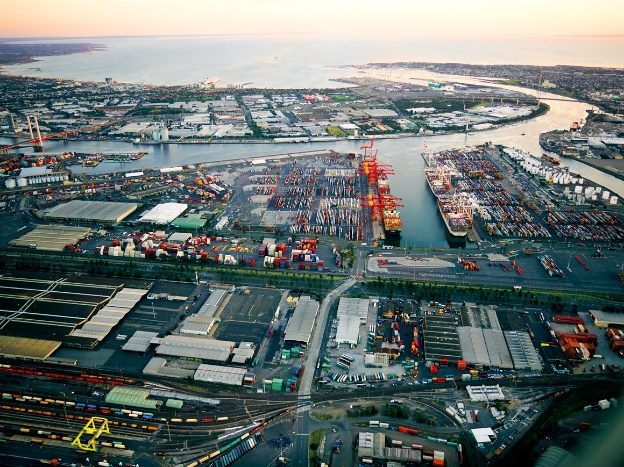
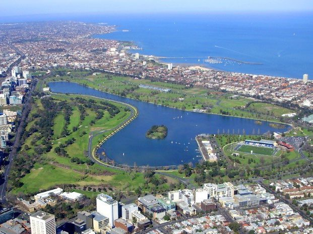
Harris and Ullman, 1945
In 1945, Harris and Ullman presented the Multiple Nuclei Model as a way to explain how cities develop to form the shapes they do. They argued that, while a city might begin with a single CBD, over the time these key activities scatter to other parts of the city. These scattered activities act as smaller CBD themselves, called a nuclei, which gain importance and grow in size and start, influencing the growth of the area around them.
The diagram below shows a generic example of a Multiple Nuclei Model where the location of the business areas (or places where people work) affecting the location of the residential zones.
Apply the model
Using the map of Melbourne and your own knowledge, suggest somewhere in Melbourne that matches each of the zones in the Multiple Nuclei Model. The first one has been done for you.
Suggested answers (accept any well-reasoned place)
Light manufacturing: Brunswick, Collingwood · Outlying business district: Box Hill, Dandenong, Footscray · Medium income: Doncaster, Glen Waverley · High income: Toorak, Brighton · Commuter: Pakenham, Melton · Heavy manufacturing: Altona, Port of Melbourne · Industrial suburb: Laverton North, Dandenong South · Low income: older suburbs near industry, such as parts of the west and north.
Vocabulary
Migration > movement of people.
Different reasons: for work, for family, for the chance of a better life.
Different ways: we move around the block, to the next town, to a different state, or even to the other side of the world.
Ask students to guess each definition before flipping. Then ask: which kind of migration brings most people to Bengaluru?
Internal migration > movements within the same country.
International migration > different countries.
Emigrate > to leave one's country to live in another.
Immigrate > to come into another country to live permanently.
Drag each card, or tap a card then tap a box
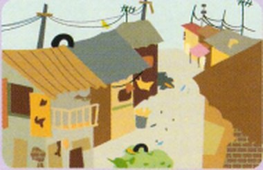
Poor living conditions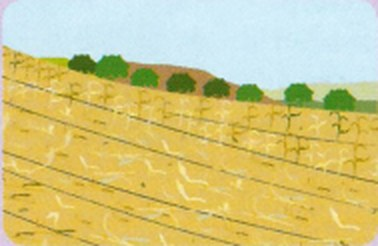
Crop failure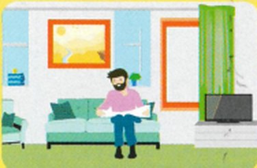
Better living conditionsPush factors drive people away from rural areas; pull factors attract them to the city. Once the sort is correct, ask which factors explain migration to Bengaluru.
Quick think
Quick think: Categorise each of the push and pull factors into political, social, economic and environmental factors of migration to cities.
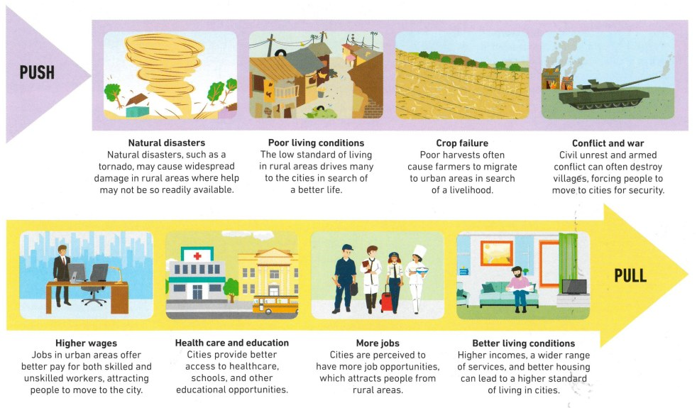
Analyse the graph
Carefully examine the graph:
Answers
1. Scale, Axes and Legend are shown; the Title and Source are missing. 2. Mostly Asia (Tokyo, Delhi, Shanghai, Mumbai, Beijing), plus Africa (Cairo) and Latin America. 3. By percentage: Beijing (+308%), Shanghai (+293%), Delhi (+271%). Click “Sort by % increase” to check.
The 30 largest cities, 1950–2035
Growth, revival and decline
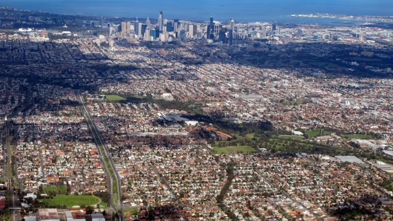
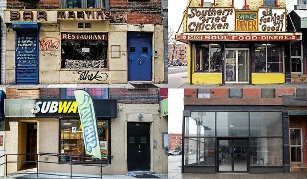
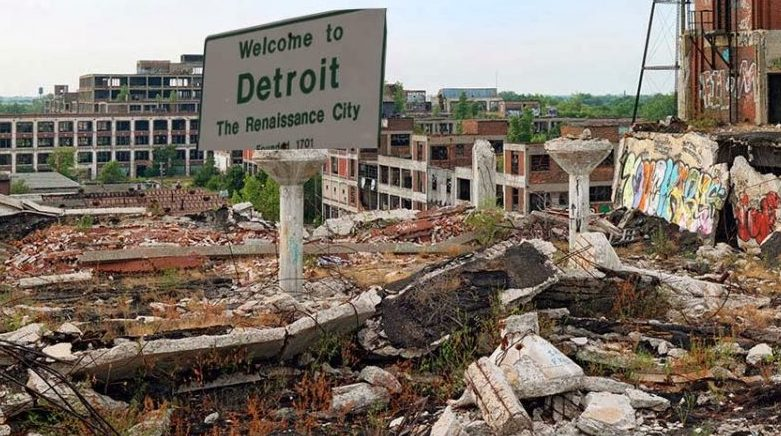
| Urban sprawl | Gentrification | Urban decay |
|---|---|---|
| Urban sprawl refers to the rapid expansion of the geographic extent of cities, often characterized by low-density housing and increased reliance on cars for transportation. | Gentrification refers to the process whereby the character of a poor urban area is changed by wealthier people moving in, improving housing, and attracting new businesses, | Urban decay involves the deterioration of the parts of a city, with infrastructure falling into disrepair and buildings abandoned for long periods of time. |
Growth, revival and decline · continued
| Urban sprawl | Gentrification | Urban decay |
|---|---|---|
| Urban sprawl is caused in part by the need to accommodate a rising urban population, as well as from a desire for increased living space, | often displacing current inhabitants in the process changing the character of a suburb or street | Reasons for urban decay include the decline in manufacturing, |
| as exemplified by the growth of Melbourne. | as shown in the changes of shop fronts in New York (USA). | like in the case of Detroit (USA) which experienced significant decay following the closure of car manufacturing. |
Quick check · six questions
Opportunity, inequality and the people changing their city
Earth at night: every light is a town or a city. Where is Bengaluru?
Night lights: NASA Earth at Night · globe drawn live in the browser
Inquiry
The rapid growth of cities provides opportunities and challenges for urban dwellers, local communities and governments. Through the example of Bangalore (India) explore how rapid urbanisation led to increased economic and social inequalities, but also community advocacy and education empowerment of women. Work though the task sheet as you watch the ABC program Challenges of Urbanisation.
Bangalore or Bengaluru? The city was officially renamed Bengaluru (its Kannada name) in 2014. The program uses the older name; both are correct.
Press play or drag the slider
Drag the divider
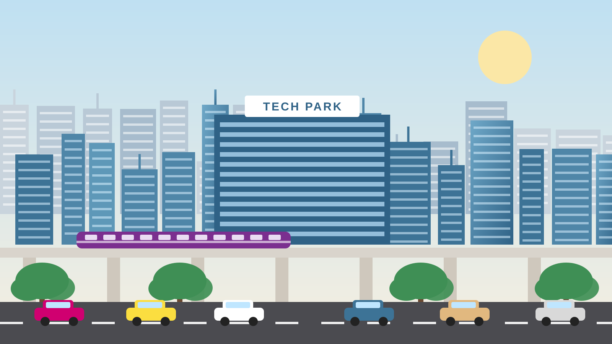
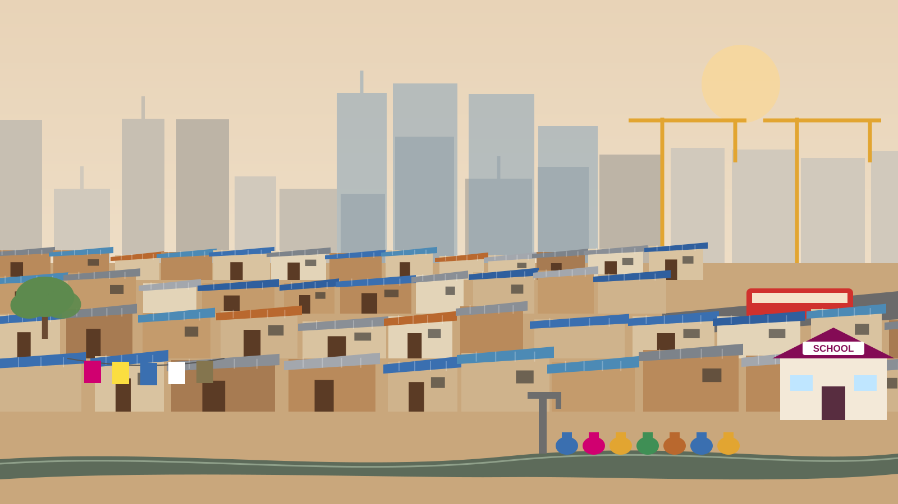
Both scenes share the same skyline. Many of the people who build the towers live in the settlements in their shadow.
Indicators of poverty · click the hotspots
Click each numbered hotspot. For each one, note how it shows inequality: what do residents here lack that others in the city have?
No pipes to each home. Families queue at a shared tap or buy from tankers, often paying more than wealthier homes pay for piped water.
Fetching water is usually women’s and girls’ work, which takes time from school and paid work.
Open drains run between homes. Without toilets and sewers, diseases spread quickly, especially when monsoon rain makes the drains overflow.
Residents build homes from brick, tin and blue tarpaulin. Without legal title to the land, families risk eviction, so many are reluctant to invest in better buildings.
Construction, domestic work, waste picking and street vending: most jobs are informal, paid in cash, with no contract or sick pay. Many residents build the towers they could never afford to live in.
Main roads and buses run along the edge. Long, costly commutes limit which jobs people can reach.
Government and NGO schools are a path out of poverty, especially for girls. Educating women is linked to higher incomes, better family health and a stronger voice in the community.
A new metro line is planned through the neighbourhood
Community advocacy and the empowerment of women
A group of 10–20 women from the same settlement meets every week.
Each member saves a small amount into a shared fund, even a few rupees.
Members borrow from the fund for a sewing machine, school fees or a better roof, at no or low interest.
Groups with a savings record can access bank loans and government housing and sanitation schemes.
Members gain literacy, confidence and a voice. Some join ward committees and campaign for water, toilets and housing.
Discuss: why might a bank refuse a loan to one woman in an informal settlement but lend to a group? How does this change who makes decisions at home and in the community?
10 coins · choose wisely
As you watch
1 · Why are India’s cities growing so fast?
Name two push factors and two pull factors that bring people to Bangalore.
Push: drought and crop failure, debt, too little land, few rural jobs. Pull: construction and service jobs, higher wages, schools and hospitals.
2 · Inequalities: access to housing and services
List three indicators of poverty you see in the informal settlements.
Makeshift homes of tin and tarpaulin; shared taps or tanker water; open drains and few toilets; overcrowding; no legal title to the land.
3 · Inequalities: access to employment
What is the informal economy? Give two examples from the program.
Work without a contract, tax records or legal protection: construction labour, domestic work, waste picking, street vending.
As you watch · continued
4 · Forces of change: water and sanitation
How have communities worked to improve water and sanitation?
Residents organised with NGOs to bring piped water and build toilets and covered drains, often contributing labour and savings.
5 · Forces of change: self-help housing
How do women’s savings groups help families improve their housing? How does this empower women?
Pooled savings and loans buy materials and land; groups negotiate with government. Women gain control over money, new skills, confidence and a voice in decisions.
Reflect
Which change made the biggest difference to residents’ lives: water, housing, jobs or education? Explain.
Accessible · Efficient · Ethical
Documentary
While you watch this short documentary on future cities, think which of these solutions will lead to cities to become more:
Students record each solution on the mind map on the following slide, under the quality it improves most.
No internet connection.
Scan the code or open
youtube.com/watch?v=xOOWk5yCMMs
Type an idea and press Enter · double-click an idea to remove it
UN Sustainable Development Goals
Cities represent the future of global living. More than half of the world’s population lives in urban areas, a figure expected to rise to 70% by 2050. However, many cities are unprepared for this rapid urbanization. It frequently outpaces the development of housing, infrastructure, and services, leading to a rise in slums and informal settlements.
Achieving sustainable development requires transforming how we build and manage urban spaces. We must focus on inclusive, resilient, and sustainable policies that prioritize access to basic services, affordable housing, efficient transportation, and green spaces for everyone.
Most urban growth is taking place in small cities and intermediate towns, which often exacerbates inequalities and poverty. Globally, up to 3 billion people struggle to afford a place to live, and 1.16 billion live in slums or informal settlements without basic services. Creating safe, resilient, and sustainable cities requires coordinated investments in affordable housing, climate-resilient infrastructure, and inclusive governance.
By 2040, more than 2 billion urban residents could face an additional temperature rise of at least 0.5°C, and over a third of the global urban population may endure annual average temperatures of 29°C or higher. Flood risks are also escalating. In 2025, 1 billion people lived in areas prone to severe riverine flooding, with half of them residing in cities.
UN Sustainable Development Goals · continued
Inequality, high energy consumption, and pollution present massive hurdles. Cities occupy just 3% of the Earth’s land but account for 60% to 80% of global energy consumption and 75% of carbon emissions. Furthermore, the high concentration of people makes cities highly vulnerable to climate change and natural disasters, making urban resilience vital to avoid devastating human and economic losses.
These issues eventually impact every citizen. Inequality can lead to social unrest, while pollution damages everyone’s health, reducing workers’ productivity and harming the economy. Additionally, natural disasters have the power to disrupt everyone’s daily lives. Air pollution is not just a city issue—it actively degrades health in towns and rural areas alike.
The cost of poorly planned urbanization is clear in the massive slums, tangled traffic, rising greenhouse gas emissions, and sprawling suburbs we see worldwide. By choosing to build sustainably, we choose to create cities where all citizens enjoy a high quality of life, contribute to the local economy, and build shared prosperity without harming the environment.
The cost is minimal compared to the immense benefits. For example, while building a functional public transport network requires an initial investment, the long-term payoffs are massive for economic activity, air quality, transit times, and the overall success of a connected city.
UN Sustainable Development Goals · continued
You can make a difference by taking an active interest in your city’s governance and advocating for the changes you want to see.
Develop a vision for your building, street, and neighborhood, and work to bring it to life. Consider your community’s access to local jobs, safe sidewalks for children, well-lit areas at night, nearby public transit, clean air, and vibrant shared public spaces. Creating better conditions in your immediate community has a direct, powerful effect on the global quality of urban life.
Source: The Sustainable Development Goals Report 2026
Quito, Ecuador · 2016
The United Nations Conference on Housing and Sustainable Urban Development, took place in Quito, Ecuador from 17-20 October 2016, and was the first UN global summit on urbanization since the adoption of the 2030 Agenda for Sustainable Development.
Habitat III offered a unique opportunity to discuss the important challenges of how cities, towns, and village can be planned and managed, in order to fulfill their role as drivers of sustainable development, and how they can shape the implementation of the Sustainable Development Goals and the Paris Agreement on climate change.
In Quito, world leaders adopted the New Urban Agenda which set global standards of achievement in sustainable urban development, rethinking the way we build, manage, and live in cities through drawing together cooperation with committed partners, relevant stakeholders, and urban actors at all levels of government as well as the civil society and private sector.
Connect: which of the Bengaluru projects from the ward councillor simulation best fit the New Urban Agenda’s aim of working with “urban actors at all levels”? Why?
Build an argument
Before you go
Answers are kept in this browser only. Ask students to paste them into the Canvas discussion before the lesson ends.
For staff · the showcase · press ? for every shortcut
Four 3D globes driven by real UN data: drag, zoom, click a country, and play 1950 to 2050.
Drag-and-drop sorts, a branching simulator and a decision game check answers instantly.
Team mode turns any quiz into a timed, scored game show with sound and confetti.
Students scan a code and their answers build a word cloud on the board in real time.
Synthesised city soundscapes, and characters who read their own lines aloud.
Presenter view (P), pen and laser (D, L), timer (T) and name picker (N) are built in.
Answers save in the browser and become a one-click learning journal PDF (J).
Opens by double-clicking, works offline, scales to any screen and embeds in Canvas.
Three PowerPoints, a PDF and a web page merged. A script checked every source word made it in.